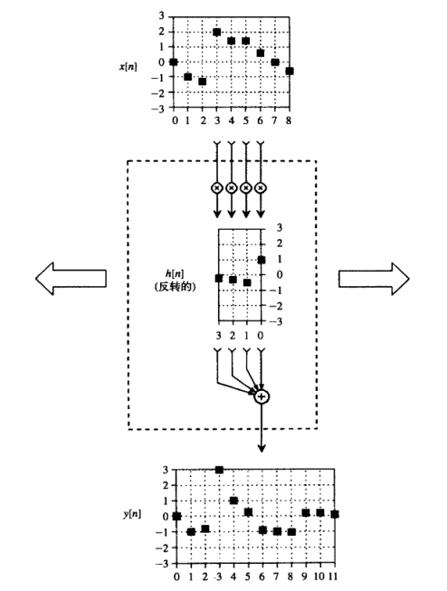
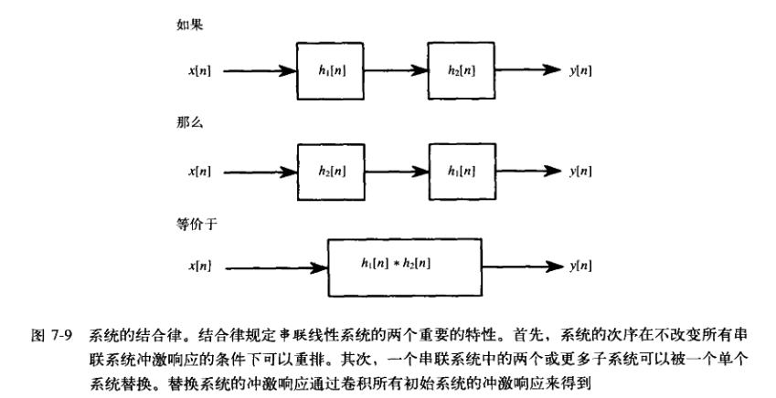
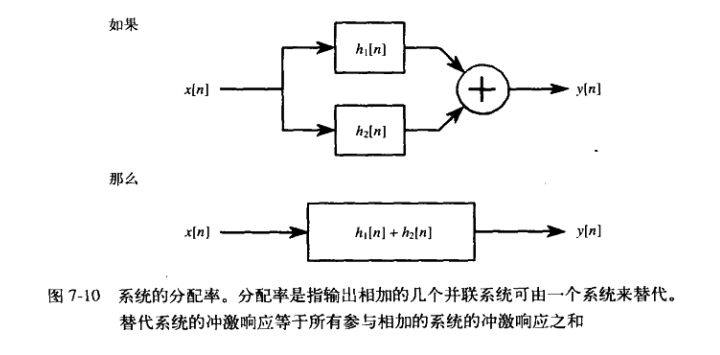

DSP 软件、程序语言
当想要将一个最新的DSP处理器应用到当前工程中时，编程形式有很多种，如：
- 学习设备的内部架构，通过汇编程序使用处理器特性
- 使用厂商提供的C编译器，通过C语言编程
- 使用厂商提供的软件包，包括算法库、I/O接口预置程序、调试工具等进行编程
当你使用一种高级语言时，是在依赖着编写编译器的程序员所理解的硬件操作的最好技术；当你在使用
一个应用程序时，你是在依赖着写应用程序的程序员所理解的最好的DSP技术。矛盾在于：这些程序
员从未见到过你面对的具体问题。因此，他们不可能总是提供给你最佳的解决方案。当你在运用一种高
级语言时，可以预见最终的机器码在内存中使用、速度和精度方面可能会受限。
线性系统
线性的要求
DSP中线性系统一般需要具备的性质:
- 位移不变性
- 齐次性
- 可加性
静态线性和正弦保真性
- 静态线性：信号为常量时，输出是输入乘以一个常数
- 无记忆系统
静态线性 + 无记忆 = 线性系统
- 正弦保真性：对于线性系统， 输入正弦信号时会输出正弦信号
线性系统具有可交换性，系统可串接
叠加 : DSP的基础
在信号处理中，输入和输出信号可以被视为一些简单波形叠加而形成的，这是数字信号处理的基础。
常见的分解：
- 脉冲分解
- 傅里叶分解
如何近似为线性系统
如果可以把非线性系统看做线性系统来分析，就可以把上述方法全都使用起来。
- 忽视非线性：如果非线性系统足够小，则系统可以近似看成线性的
- 保持小信号输入：许多非线性系统，如果信号的幅度非常小，系统会呈现线性特性
- 采用线性变换：如通过取对数，把信号的相乘变为线性的相加的过程(同态信号处理)
卷积
函数和冲击响应
- 信号可以被分解为一系列脉冲序列的组合
- 任何一个脉冲都可以由一个 $\delta$ 函数的移位和比例增减来表示
- 输出信号就是对冲激响应进行和输入端 $\delta$ 函数相同形式的移位和比例增减得到的
所以，如果知道了一个系统的冲激响应，就会立刻知道它对于任意脉冲的响应，这意味着我们了解了
系统的全部特征。
卷积运算
冲激响应在不同的应用场合下会有不同的名字，例如
- 对于滤波器，冲激响应可以叫做滤波器内核，卷积核或简称为核
- 图像处理中，冲激响应称为点扩散函数
卷积的表示： $ x[n] * h[n] = y[n]$
卷积中的数学
卷积应用在数字信号处理中可以采用两种不同的观点来理解
- 从输入信号的角度来看
- 输入信号的每一个样点可表示为 $\delta$ 函数的移位和比例，对应的为输出信号贡献一个
进行过移位和比例增减的冲击响应 - 卷积是可交换的
- 输入信号的每一个样点可表示为 $\delta$ 函数的移位和比例，对应的为输出信号贡献一个
- 从输出信号的角度来看
- 观察输出信号的单个样点，找出输入信号中对该点起作用的样点
- 当前点输出信号的值取决于输出信号向前选取卷积窗长个数点

其数学定义为:
卷积的性质
常见的冲激响应
$ \delta $ 函数是最简单的冲激响应：
- $x[n]*\delta[n]=x[n]$
- 放大器或衰减器: $x[n]*k\delta[n]=kx[n]$
- 延迟或超前：$x[n]*\delta[n+s]=x[n+s]$
类微积分的运算
- 离散导数
- 一阶差分
- 离散积分
- 累积求和
除了有简单的表达式 一阶差分$y[n] = x[n] - x[n-1]$、 累积求和 $y[n] = x[n] + y[n-1]$
外，也可以通过卷积运算的方式得到。
低通滤波器和高通滤波器
一般情况下，低通滤波器的内核由一组相邻的正值样点构成，从而输出信号中的每一个样点都是输入
信号中一些相邻样点的加权平均值，这个平均值使信号变得平滑，消除了高频分量。
高通滤波器一般是由 $\delta$函数减去低通滤波器得到的。高通滤波器的直流增益是0，这是通过使
滤波器内核所有点的代数和等于0的方法来实现的。
其他一些概念
- 因果与非因果信号
- 相位
- 零相位：关于第0个抽样点左右对称
- 线性相位： 对称轴所在的位置不是第0个样点
- 非线性相位： 内核左右不对称
卷积的数学性质
基本性质
卷积运算属于 $Abel$ 群.
- 交换律： $ a[n]b[n] = b[n]a[n] $
- 结合律： $ (a[n]b[n])c[n] = a[n](b[n]c[n]) $
- 分配律： $ a[n]b[n] + a[n]c[n] = a[n]*(b[n] + c[n]) $


输入输出间的转移性
输入信号的一个线性改变将导致输出信号发生同样的线性改变
相关
相关是一种和卷积很类似的数学运算。像卷积一样，相关通过两个信号产生第三个信号，第三个信号
被称作两个输入信号的互相关; 如果一个信号与自己相关，产生的信号则被称为自相关。互相关信号每个样点的幅值是衡量接收信号与目标信号在当前样点相似程度的指标。互相关的最大值
出现在当目标信号与接收信号中具有相同特征的部分对齐的时候。这种操作常常被称为匹配滤波。